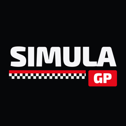
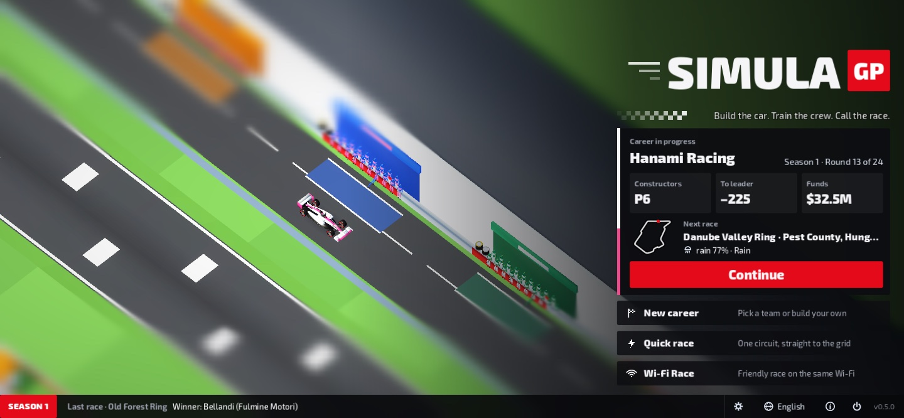
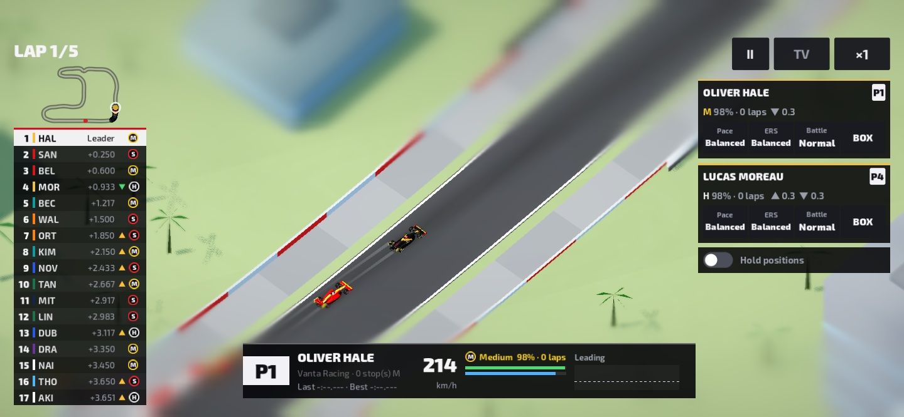
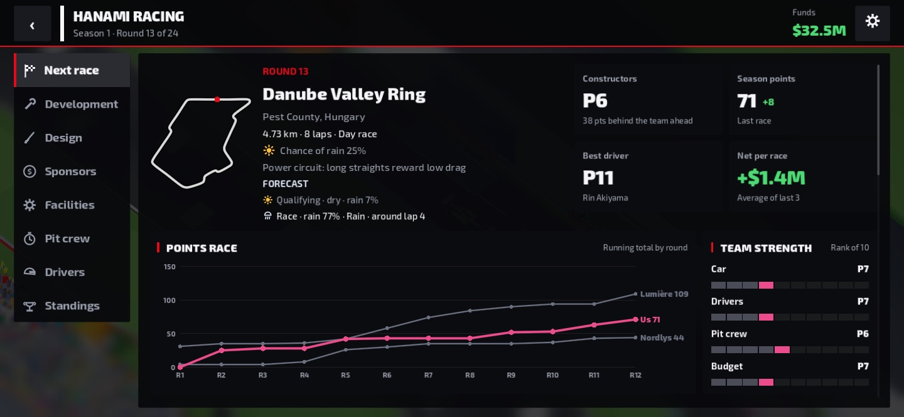
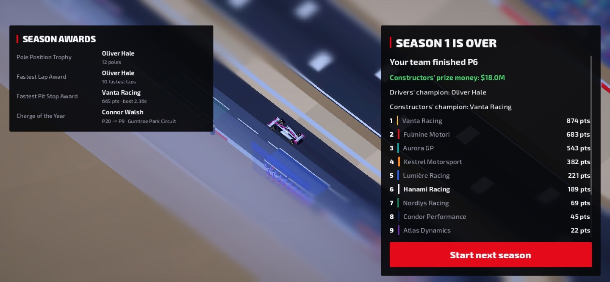

Simula GP: Escudería
Dirige tu equipo de carreras
Tú no conduces: construyes el equipo que gana. Desarrolla el coche, ficha pilotos, entrena a los mecánicos y decide la estrategia desde el muro mientras cada carrera se vive como una retransmisión en 24 circuitos originales en miniatura. Totalmente offline, sin anuncios, 10 idiomas.




El piloto lleva el volante. Tú decides cómo se gana.
En Simula GP eres el jefe de una de las diez escuderías de la parrilla. Desarrolla el coche, ficha pilotos, entrena a tu equipo de boxes y toma las decisiones que convierten a un equipo de media tabla en campeón. Luego, míralo todo en directo sobre el asfalto.
UN COCHE MÁS RÁPIDO
- Desarrolla ocho piezas: alerón delantero, alerón trasero, fondo plano, pontones, suspensión, frenos, unidad de potencia y caja de cambios
- Cada mejora choca con el límite presupuestario, y las horas de túnel de viento favorecen a los equipos de abajo: la jerarquía nunca está escrita
- Construye instalaciones: túnel de viento, simulador, fábrica y centro de entrenamiento de boxes
GESTIONA LA ESCUDERÍA
- Ficha agentes libres, negocia contratos y controla los sueldos
- Los pilotos jóvenes mejoran cada temporada; los veteranos se apagan poco a poco. Elige bien el momento del relevo
- Entrena a tus mecánicos hasta que las paradas de dos segundos sean rutina. Los entrenamientos y las paradas reales les dan experiencia
- Cumple los objetivos de los patrocinadores cada fin de semana para ganar más dinero
- Controla el cupo de unidades de potencia: si te pasas, sanción en parrilla
- Un paddock vivo: clasificación por eliminatorias, previsión meteorológica, lesiones y pilotos reserva, retiradas, novatos y salón de la fama, contratos de patrocinio y costes de reparación tras los accidentes
EL FIN DE SEMANA DE CARRERA
Libres para encontrar el reglaje, ajuste de alerones, clasificación y, por último, la estrategia: qué neumáticos, cuántas paradas y cuándo entrar a boxes.
MÍRALO COMO EN LA TELE, MANDA DESDE EL MURO
Las carreras se simulan con física real y se viven como una retransmisión: el realizador elige los planos, la torre de tiempos marca cada diferencia y la radio del equipo te mantiene al tanto. Desde el muro puedes:
- Cambiar el modo de ritmo y el modo ERS
- Llamar a boxes con cualquiera de los cinco compuestos
- Dar órdenes de equipo para intercambiar posiciones
No hay dos carreras iguales. La lluvia llega y se va, un coche de seguridad virtual pone patas arriba la estrategia, hay accidentes y abandonos por averías, y en las rectas largas el modo recta y el modo adelantamiento deciden los duelos.
CIRCUITOS EN MINIATURA
Veinticuatro circuitos originales repartidos por el mundo, con un encantador estilo de maqueta tilt-shift: una temporada completa de 24 rondas con seis fines de semana sprint. Las temporadas no se acaban: construye una dinastía a lo largo de los años.
A TU AIRE
- Totalmente offline, sin conexión
- Carrera Wi-Fi: carreras amistosas con amigos en la misma red, cada uno con su equipo de carrera
- Sin anuncios ni compras integradas
- Sin cuentas y sin recopilar datos
- Juega en móvil, tableta o PC (Steam) con pantalla táctil, ratón y teclado o mando (Steam Deck)
- 10 idiomas
Todos los equipos, pilotos y circuitos son ficticios. Simula GP no está afiliado a ninguna competición real.